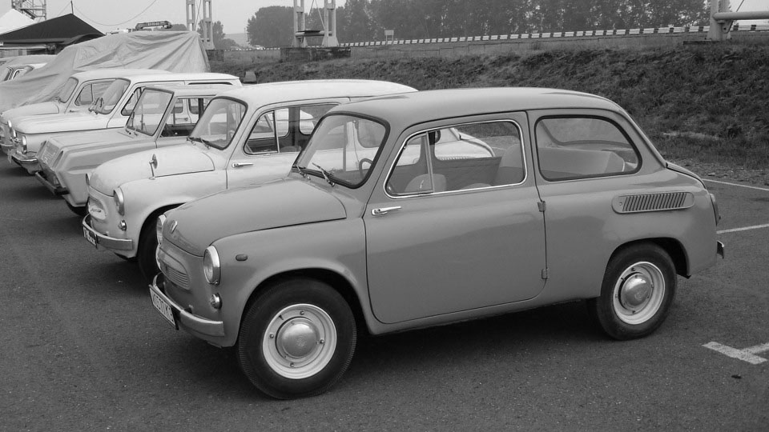

ЗАЗ-965 «Запорожец» — советский микролитражный
автомобиль, выпускавшийся с 1960 по 1963 год.
ЗАЗ-965А «Запорожец» — модификация с двигателем
мощностью 27 л. с., выпускавшаяся с ноября 1962
по 1969 год. Всего было выпущено 322 166
автомобилей всех модификаций. На момент своего появления в 1960 году
«Запорожец» стоил 18 000 дореформенных рублей —
впрочем, реально в том году была выпущена лишь
небольшая партия автомобилей, в основном
разошедшихся по заводам-смежникам ЗАЗа,
первые же товарные автомобили пошли в продажу
уже после денежной реформы, по цене 1 800 руб.
По легенде, цена определялась как совокупная
стоимость 1 000 бутылок водки (по 1,80 руб.).
Со средней заработной платой в СССР начала
1960-х годов эта величина соотносилась примерно
20:1, то есть, «Запорожец» можно было купить
примерно за 20 средних размеров заработной платы
по стране.Современная стоимость ЗАЗ-965 на вторичном рынке очень сильно
разнится в зависимости от продавца и сохранности автомобиля, составляя от
нескольких тысяч рублей до нескольких тысяч долларов.